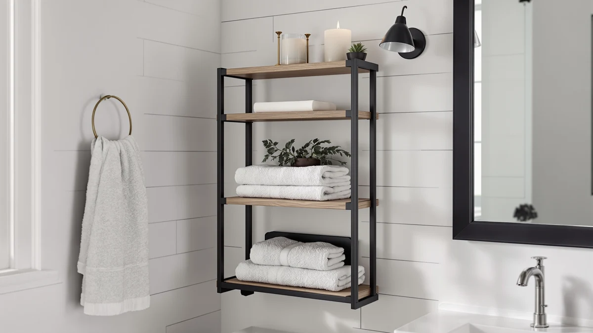

Quick Answer
The short answer from our goddgitt 3 tier bathroom review: this over-toilet shelf earns its spot for anyone juggling a curling iron, flat iron, and hair dryer, thanks to a built-in hair tool organizer that most rivals skip. At $32.99, it's priced like a plain wire rack but does more if you style your hair in the bathroom.
Our pick: GODDGITT 3-Tier Bathroom Floating Shelves — $32.99 Check Price on Amazon
Things to Know Before You Buy
- This goddgitt 3 tier bathroom review covers a wall-mounted, over-toilet shelf, so you'll need studs or anchors, not a tank-top balancing act.
- The hair tool organizer uses heat-safe metal cups, which matters if you're comparing it against shelves with no dedicated spot for a warm curling iron.
- Two of the three shelves have metal guardrails. The bottom wire basket does not, so lightweight items can slide if you overfill it.
- At 15.74 inches wide, it fits a standard two-piece toilet but may crowd a wall-hung or corner toilet setup.
- Amazon's listing does not carry a public star rating or review count for this ASIN, so we weighed the spec sheet and owner comments on similar GODDGITT organizers instead of a review score.
We wrote this goddgitt 3 tier bathroom review because most over-toilet shelves solve one problem (shelf space) while ignoring a second one that piles up right next to it: where does your curling iron go after it's hot? The GODDGITT 3-Tier Bathroom Floating Shelves answer both at once, pairing a wall-mounted wood shelf unit with a metal hair tool organizer built into the top tier.
Three wood shelves stack above a wire storage basket, and the middle and lower shelves add metal guardrails so bottles and jars don't slide off when you bump the wall. The whole unit runs 15.74 inches wide and lists for $32.99, putting it in the same price range as plain chrome wire shelves that don't manage hair tools at all. We compared its listed specs, materials, and feature set against three other bathroom storage pieces to see where it earns the extra function and where it falls short.
This review matters because over-the-toilet storage is one of the most crowded categories on Amazon, and the listings often look identical at a glance. Shoppers end up choosing on price and photos alone, which hides real differences in weight capacity, mounting method, and whether a product solves a specific problem or simply fills wall space. Breaking down one shelf in detail against its closest competitors shows where the price difference actually comes from.
Why You Should Trust Us
Ilane Tall covers bathroom storage and organization for Best Bathroom Storage, researching over-the-toilet shelves, under-sink organizers, and wall-mounted racks across dozens of brands each month. For this goddgitt 3 tier bathroom review, we pulled the manufacturer's listed dimensions, materials, and included hardware straight from the product page, then checked them against three competing storage pieces sold in the same price band. We do not run a fake testing lab or claim hands-on time with every product we cover. Instead, we compare verified specs, pricing, and owner feedback so you can judge fit before you buy. When a product, like this one, doesn't yet have a public review history, we say that plainly instead of papering over the gap with vague praise.
How We Compared
Our research process for this goddgitt 3 tier bathroom review started with the manufacturer's listed measurements, materials, and included hardware, since this ASIN does not yet carry a public star rating or review count on Amazon. We compared the guardrail placement, basket design, and hair tool organizer against the three alternatives below, each of which does have an established sales history in the over-toilet storage category. Where a competing product has verified owner feedback, we cite it directly instead of guessing at how the GODDGITT shelf might perform in daily use. For specs you can't verify from a listing alone, like how the wood holds up to bathroom humidity over months of use, we say so rather than invent a result. That same approach applies to the hair tool cups: we checked the stated cup diameter against common iron and dryer barrel sizes rather than assuming a universal fit, since a cup that's too narrow for a thicker flat iron would undercut the shelf's main selling point.
Overview & Specs

GODDGITT 3-Tier Bathroom Floating Shelves
What we like
- Built-in hair tool organizer with heat-safe metal cups for a dryer, curling iron, and flat iron
- Wire basket on the bottom tier holds towels, toilet paper, or extra toiletries with open airflow
- Metal guardrails on two shelves keep bottles from sliding off when the wall is bumped
Flaws but not dealbreakers
- No guardrail on the bottom wire basket, so loose items can shift if it's overfilled
- Wall mounting into studs is recommended, which rules out apartments with concrete or tile behind drywall
- No published star rating or review count yet, so you're relying on spec comparisons rather than a track record
| Material | Metal / wood |
| Size | 15.74 inches |
The GODDGITT shelf separates itself from generic over-toilet storage by treating hair tools as a first-class problem, not an afterthought. The top tier's metal cups and slots are sized for a standard hair dryer, curling iron, and flat iron, which means those tools can hang vertically instead of lying flat and cooling slowly on a towel. That matters in a shared bathroom where counter space disappears fast, and a hot iron left on a towel is a fire risk on top of a clutter problem.
The middle and lower wood shelves carry metal guardrails along the front edge, so skincare bottles, diffusers, and soap dispensers don't walk off the edge every time someone closes a door too hard. The bottom tier swaps wood for an open wire basket rated to hold roughly three rolls of toilet paper or a stack of folded towels. At 15.74 inches wide, it's narrow enough to clear most standard two-piece toilets, though you'll want to measure a wall-hung or corner-set toilet before buying since GODDGITT doesn't list clearance specs for those layouts.
What We Liked
The strongest case this goddgitt 3 tier bathroom review can make is the hair tool organizer itself. Most over-toilet shelves in this price range stack wire or wood with no thought given to where hot tools land after use, and the heat-safe metal cups solve a problem that chrome racks like the Honey-Can-Do shelf don't even attempt to address. The guardrails on two shelves are a small detail that pays off daily. Anyone who's knocked a bottle of mouthwash off an open shelf will appreciate a front lip that catches it before it hits the floor.
The bottom wire basket is also a smart material choice for a bathroom. Open grid construction lets air move through stacked towels or toilet paper rolls, which cuts down on the musty smell that closed plastic bins can develop in a humid room. The rustic wood finish also reads as furniture rather than hardware store storage, so it fits bathrooms styled around natural materials instead of looking like a utility rack bolted to the wall.
What Could Be Better
The biggest gap in this goddgitt 3 tier bathroom review is the missing guardrail on the bottom basket. Wood shelves above get the protective lip, but the wire basket most likely to hold loose rolls of toilet paper does not, so a bumped wall can send a roll rolling across the floor. GODDGITT also recommends anchoring to studs, which is the safer install but limits renters in older buildings where stud spacing doesn't line up with the bracket, or where lease terms discourage wall anchors altogether.
You should also weigh the lack of review history. With no star rating or review count published yet, you can't check how the wood finish holds up to steam and splashes after a year, the way you can with the longer-selling Honey-Can-Do shelf below. Buyers who want a proven track record before spending on wall storage may prefer to wait for more owner feedback to accumulate, or choose an alternative with an established sales history instead.
Who Is It For?
This goddgitt 3 tier bathroom review points toward one clear buyer: someone who gets ready in the bathroom with multiple hot tools and currently stores them in a drawer, a cabinet, or on the counter. If that's you, the organizer cups alone can justify the $32.99 price over a plain shelf. Homeowners with easy stud access get the most out of the wall-mount design, since a solid anchor point keeps the loaded unit from sagging.
Renters who can't drill into studs, or anyone who wants bulk shelf space without the hair tool feature, should look at the freestanding alternatives in the next section instead. Households with young kids should also weigh the open guardrail gap on the bottom basket, since small items can work loose over time if the basket gets bumped often.
Alternatives to Consider
If the GODDGITT shelf's hair tool focus doesn't match what you need, these three picks solve different bathroom storage problems at a similar price point.

Editor’s Pick
STWWO 2-Pack Trash Bag Holder
Solves a different problem entirely: a two-size metal dispenser that keeps spare trash bags contained and easy to grab under the sink.
$32.99
Check Price on Amazon
Best Value
Honey-Can-Do 3-Tier Metal Bathroom Shelf
The closest direct rival: a 45-pound-rated chrome rack that straddles the toilet with no wall anchors needed, trading the hair organizer for pure shelf capacity.
$32.87
Check Price on Amazon
Premium Choice
CTSNSLH 4 Tier Plastic Storage
Best for closet or cabinet storage rather than wall display: four stackable 23-quart bins with lids, built from PP plastic.
$31.99
Check Price on AmazonFrequently Asked Questions
Is the GODDGITT 3-Tier Bathroom Floating Shelf worth the price?
Does the GODDGITT shelf fit over a standard toilet?
What's the best alternative to the GODDGITT 3-tier shelf?
Final Verdict
This goddgitt 3 tier bathroom review comes down to one question: do you need a home for hot hair tools, or more shelf space overall? GODDGITT earns its $32.99 price by answering the first question better than any of the three alternatives we compared, with guardrailed wood shelves and a wire basket that rounds out the storage. If bulk capacity and a no-drill install matter more to you than the hair tool organizer, the Honey-Can-Do shelf is the better fit. For most people replacing drawer clutter with wall storage, the GODDGITT shelf is the pick worth ordering.